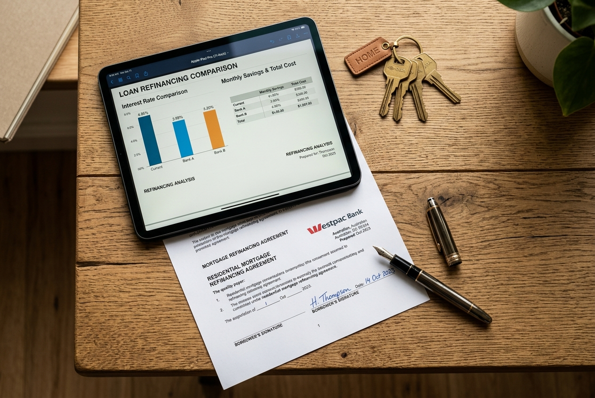

Short answer: Refinancing can make tremendous financial sense when your existing loan no longer matches your financial goals, but it is not right for every circumstance. The upfront cost of switching must always be weighed carefully against the net long-term interest savings. A comprehensive review shows exactly which side of the equation you fall on.
Australian banks frequently offer competitive "honeymoon" discount rates to attract new customers while quietly letting existing loyal borrowers drift onto higher standard variable rates. If you haven't reviewed your rate in 24 months, you could be paying a "loyalty tax" of 0.50% to 1.00% or more.
Following consecutive RBA rate cycles, mortgage repayments have surged. Restructuring your loan term or moving to a lender offering sharp wholesale pricing can provide immediate, tangible cash flow relief each month.
A promotion, becoming self-employed, starting a family, or planning to invest in Sydney property all alter what you require from your loan. Your lending structure should evolve with your life, not stay frozen in the past.
Consolidating personal loans (often 12–16%), car finance (8–12%), or credit card balances (20%+) into your home loan rate (typically under 6.2%) can dramatically lower monthly outgoings. However, this must be structured carefully with extra repayments to avoid increasing total interest over the life of the loan.
A 100% offset account allows your everyday savings to reduce the daily interest calculated on your mortgage balance. If your existing bank charges high package fees or doesn't support multiple offset accounts, switching can unlock substantial flexibility.
The transition from a low fixed rate onto your lender's default variable rate can result in payment shock. Starting a review 60 to 90 days before your fixed term expires ensures a smooth transition to the sharpest market rate without paying expensive standard rates.
If your home's value has increased, you may have accumulated substantial usable equity. Refinancing allows you to establish a separate sub-account or equity line to fund a property deposit, home renovations, or children's education without touching your primary savings.
Refinancing is only worthwhile if the financial benefit outweighs the costs. A standard Australian refinance involves:
In total, switching generally costs between $700 and $1,200. If refinancing reduces your interest rate by just 0.50% on an $800,000 mortgage, you save approximately $4,000 in interest in the first year alone—recovering your switching costs in roughly three months!
An honest mortgage broker will tell you when you shouldn't switch:
"Our job as your finance broker isn't to refinance you for the sake of it—it's to ensure your loan delivers the maximum financial advantage. If staying with your current lender and requesting an internal rate reduction is best, that is exactly what we will advise."
Ashwani Pande, Founder & Lending Specialist
Send us a recent loan statement, and we'll provide a written comparison against 70+ lenders in 24 hours. No cost and zero obligation.